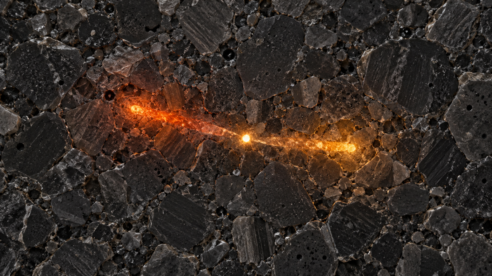
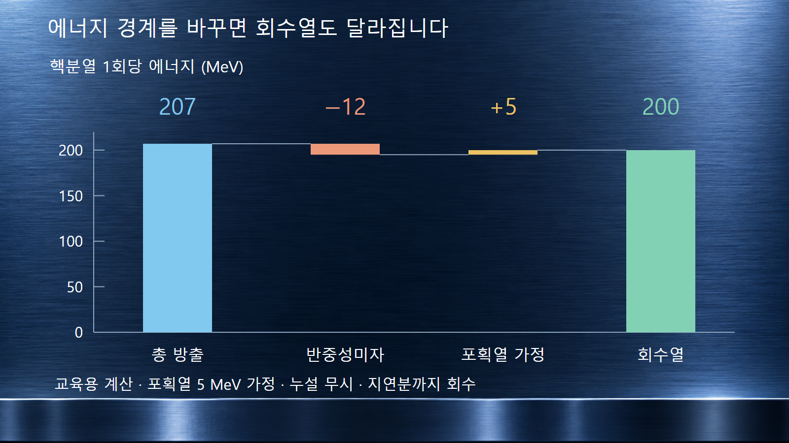
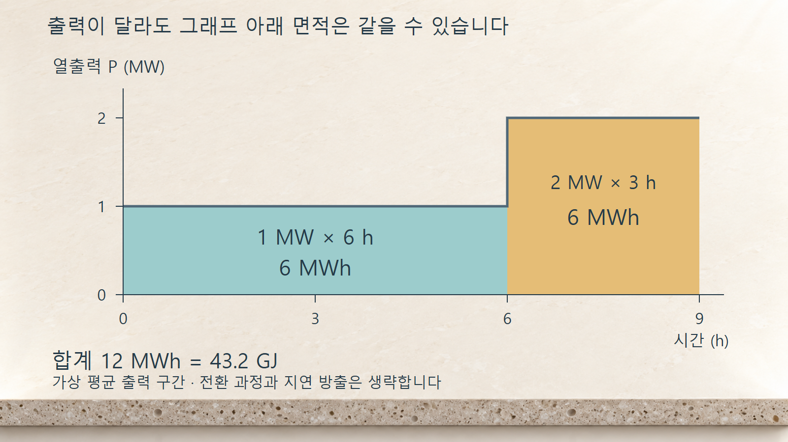

질량·에너지·핵반응 · 035
핵분열 에너지
사건당 에너지에서 회수열·열출력·누적 에너지까지

핵분열의 에너지는 갈라진 조각이 물질을 가열하면서 대부분 열로 전달됩니다. 그러나 핵반응에서 방출된 총에너지, 원자로 안에 남는 열, 발전기에서 나오는 전기는 서로 다른 양입니다. 약 200 MeV라는 대표값을 사용할 때도 어느 경계까지 포함했는지 정해야 합니다.
1. 무거운 핵이 갈라지면 에너지가 남는 이유
우라늄-235가 중성자를 흡수하면 들뜬 우라늄-236이 형성되고, 가능한 반응 경로 가운데 하나로 핵분열이 일어납니다. 초기 계보다 최종 생성물의 총 정지질량이 작아지는 만큼 에너지가 운동에너지와 복사에너지로 나옵니다. 중간질량 영역의 핵들이 대체로 핵자당 더 강하게 결합한다는 사실이 그 방향을 설명합니다. 다만 분열조각은 보통 중성자가 많고 방사성 붕괴를 이어가므로, 더 큰 결합에너지와 방사성 안정성을 같은 뜻으로 읽으면 안 됩니다.
하나의 정해진 딸핵 쌍만 생기는 것도 아닙니다. 분열조각의 질량과 들뜸, 방출 중성자 수가 사건마다 달라져 에너지 분배도 분포를 가집니다. 한 반응식에서 계산한 Q값과 수많은 핵분열의 평균 에너지를 구별해야 합니다. 이 글의 수치는 원자로 열수지의 규모를 이해하기 위한 평균값 또는 명시한 가정값입니다.
2. 에너지의 가장 큰 몫은 조각의 운동입니다
분열조각은 전하를 띠고 주변 물질과 강하게 상호작용하면서 운동에너지를 잃습니다. 이 에너지는 주로 연료에서 열로 바뀝니다. 중성자는 산란과 흡수 과정을 거치며, 감마선은 더 떨어진 곳에도 에너지를 전달할 수 있습니다. 따라서 전체 열량을 알아도 연료·냉각재·구조물 가운데 어느 곳이 얼마나 가열되는지는 별도의 방사선 수송 문제입니다.
아래는 INL의 2013년 보고서 Table 1에 제시된 우라늄-235의 설명용 근사 분배입니다. 정밀 평가값이나 모든 원자로의 공통 상수로 사용하지 않습니다. 베타붕괴에서는 전자와 함께 전자 반중성미자가 에너지를 나누어 가지며, 이 표의 중성미자 항은 통상적인 원자로 크기에서 열로 거의 회수되지 않습니다.
| 에너지 운반 성분 | 근사값 MeV/핵분열 | 열수지에서의 의미 |
|---|---|---|
| 분열조각 운동에너지 | 168 | 가장 큰 즉발 에너지 항 |
| 즉발중성자 운동에너지 | 5 | 물질과 반응하며 침적 |
| 즉발감마선 | 7 | 광자 수송 후 침적 |
| 생성물 베타붕괴의 전자 | 8 | 시간에 걸쳐 방출 |
| 생성물 붕괴감마선 | 7 | 시간에 걸쳐 방출 |
| 반중성미자 | 12 | 대부분 계 밖으로 이탈 |
| 합계 | 207 | 포획에 따른 추가 열은 별도 |
3. 예시 1 — 207 MeV와 200 MeV가 함께 나오는 까닭
앞 표의 반중성미자 12 MeV를 제외하면 207 − 12 = 195 MeV입니다. 여기에 핵분열을 일으키지 않은 중성자가 다른 물질에 포획되면서 방출하는 에너지를 핵분열 1회당 환산하여 더할 수 있습니다. 설명을 위해 그 추가 열을 5 MeV로 가정하면, 195 + 5 = 200 MeV의 회수 가능한 열을 얻습니다. 5 MeV는 이 예시의 가정이며 특정 원자로의 측정값이 아닙니다. 방사선 누설은 무시하고 지연 방출분까지 충분히 회수하는 근사입니다.
이 덧셈은 에너지를 이중으로 세는 과정이 아닙니다. 중성자가 처음 가진 운동에너지와 포획 후 핵의 결합 상태가 변하면서 나오는 에너지는 기원이 다릅니다. 그러나 사용하는 핵자료나 코드의 가열값에 포획열이 이미 포함되어 있다면 다시 더해서는 안 됩니다. INL 보고서도 포획열이 노심 물질과 중성자 에너지 분포에 의존함을 설명합니다.

4. 예시 2 — 열출력 1 MW를 초당 사건 수로 환산합니다
핵분열 1회당 회수열을 일정한 200 MeV로 가정하고, 준정상 상태의 열출력 P를 핵분열률 F로 나눠 봅니다. 전자볼트의 SI 환산은 1 eV = 1.602176634 × 10−19 J이므로 사건당 에너지는 ε = 3.204353268 × 10−11 J입니다. 따라서 F = P/ε = 106 J·s−1 ÷ ε = 약 3.12 × 1016 회·s−1입니다. 한 사건은 작지만 매초 매우 많은 사건이 겹쳐 거시적인 열출력을 만듭니다.
같은 근사에서 열출력이 2 MW이면 핵분열률도 두 배입니다. 반면 열출력이 일정한 상태에서 사건당 회수열을 200 MeV에서 205 MeV로 바꾸면 필요한 사건 수는 200/205배, 약 2.44% 감소합니다. 출력에서 핵분열률을 추정할 때 회수열의 정의가 결과에 직접 영향을 주는 이유입니다. 기동·정지의 지연열을 이 단순한 비례식만으로 설명할 수는 없습니다.
5. 운전 시간까지 곱해야 총 에너지가 됩니다
가상의 운전 구간에서 평균 열출력이 처음 6시간 동안 1 MW, 다음 3시간 동안 2 MW였다고 가정합니다. 전환 구간을 생략한 교육용 계산에서 총 열에너지는 1 × 6 + 2 × 3 = 12 MWh이며, 43.2 GJ와 같습니다. 시간에 따른 출력 그래프 아래의 면적을 더한 결과입니다. MW는 에너지가 아니라 단위 시간당 에너지이고, MWh는 일정 시간 동안 쌓인 에너지입니다.
회수열 200 MeV를 전 구간에 적용하면 누적 핵분열 수는 4.32 × 1010 J ÷ ε = 약 1.348 × 1021회입니다. 첫 구간과 둘째 구간은 출력이 다르지만 각각 6 MWh를 생산하므로 누적 사건 수도 같습니다. 이 계산은 지연 방출과 과도응답을 생략한 에너지 환산 예시이며, 실제 기동 시험이나 정지 후 붕괴열 해석을 대신하지 않습니다.

6. 열이 모두 전기가 되지는 않습니다
원자로가 만든 열은 발전 계통의 열교환·증기팽창·발전 과정을 거칩니다. 가상의 열효율을 33%로 정하면 앞 예시의 12 MWh 열에너지로부터 3.96 MWh 전기에너지를 얻습니다. 나머지는 주로 냉각 계통으로 방출되는 열이며, 이 단순 계산에는 소내 전력의 별도 공제를 넣지 않았습니다. 실제 효율은 설비와 운전 조건에 따라 달라지므로 열출력과 순전기출력을 같은 숫자로 비교하면 안 됩니다.
연쇄반응을 줄여도 이미 만들어진 핵분열생성물의 붕괴가 즉시 끝나지는 않습니다. 정지 뒤 남는 붕괴열은 이전 출력과 조사 기간, 정지 후 경과 시간에 의존합니다. 앞 표의 붕괴에너지 비율을 정지 직후 출력 비율로 그대로 옮기면 잘못입니다. 표는 사건당 누적 에너지이고, 정지 후 출력은 시간에 따른 방출률이기 때문입니다.
7. 계산에 사용할 에너지 경계를 기록합니다
열출력에 핵분열률을 연결하려면 핵종별 기여, 중성자 에너지, 포획열 포함 여부, 방사선 누설, 지연 방출분의 취급을 정해야 합니다. Kopeikin 등의 원자로 반중성미자 연구는 총 방출에너지에서 반중성미자와 아직 방출되지 않은 붕괴에너지를 빼고 포획열을 더하는 방식으로 이 경계를 명시합니다. 운전 이력이 다른 원자로에 하나의 보정값을 그대로 옮기지 않는 이유입니다.
200 MeV는 규모를 이해하고 간단한 열수지를 계산하는 유용한 대표값입니다. 실제 출력 정규화나 연료 해석에서는 해당 핵자료와 계산 모델이 정의한 회수열을 사용합니다. 분열조각의 빠른 에너지 침적, 생성물의 느린 붕괴, 냉각 계통에서의 열제거를 구별하면 미시적인 핵반응에서 발전소 열수지까지 연결할 수 있습니다.